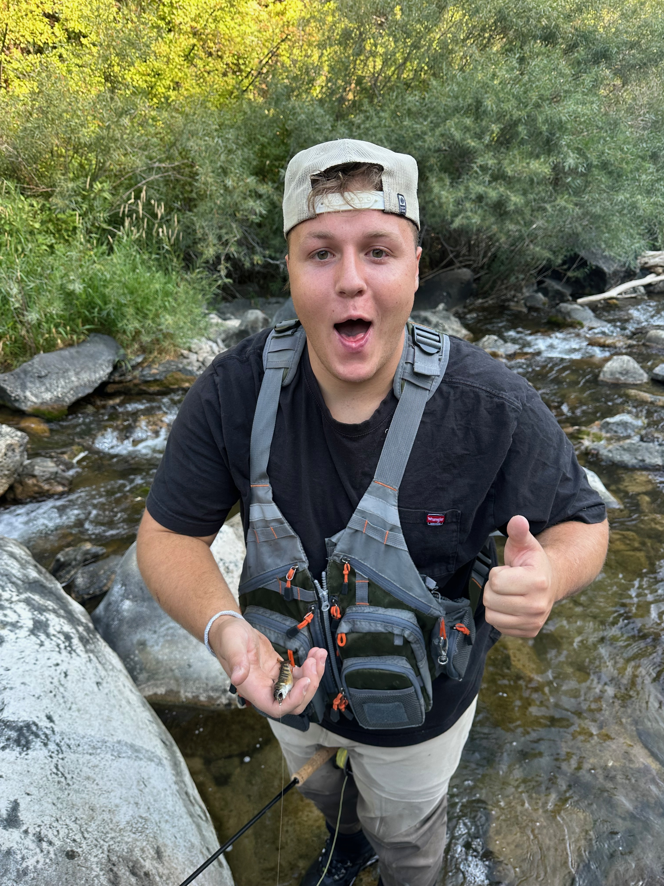

I'm a BYU Information Systems student, but I'm a lot more than that. I grew up loving the outdoors, competing in sports, and building things with my hands — and a two-year mission in Paraguay showed me the world in a way I'll never forget.
Life Outside Class


Family
I'm the third of four children — one sister and two brothers. My sister is married and we have a dog the whole family loves. Family is everything to me; growing up we spent a lot of time outdoors together, which is where my love of fishing and camping came from.
- Siblings
- 1 sister — married
- 2 brothers
- Family dog
- Shared traditions
- Annual camping and fishing trips
- College football Saturdays
My Mission
I served a two-year volunteer mission for The Church of Jesus Christ of Latter-day Saints in Paraguay — the most formative experience of my life.
Asunción, Paraguay
Left home and arrived in one of South America's most vibrant cities to begin two years of full-time service.
Language & Leadership
Became conversationally fluent in Spanish, led and mentored fellow missionaries, and built deep cross-cultural communication skills.
Back to BYU
Returned home with a new perspective on the world, stronger discipline, and a commitment to making the most of my education.
Athletics
BYU Rugby Team
I'm a member of the BYU Rugby team. Rugby demands toughness, teamwork, and quick thinking under pressure — qualities I carry into everything I do. It's been a great way to stay competitive and build friendships after returning from my mission.